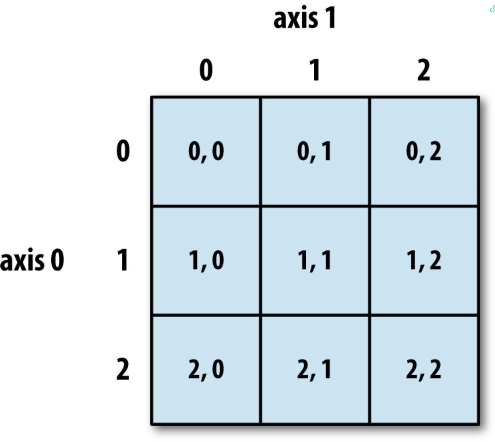

Python数据分析
第0章 简介：
0.1 必要的Python库
1. NumPy： Numerical Python
它提供了大多数涉及 Python 中数值数据的科学应用程序所需的数据结构、算法和库粘合剂。主要包含以下内容：
- 一个快速高效的多维数组对象： ndarry
- 使用数组进行元素及计算的方法和数组之间的操作运算符
- 将基于数组的数据集读写到磁盘的工具
- 线性代数操作、傅里叶变换和随机数生成
- 一个成熟的 C API，使 Python 扩展和本机 C 或 C++ 代码能够访问 NumPy的数据机构和计算设施
在数据分析中的主要作用之一是：作为在算法和库之间传递数据的容器。对于数值数据，NumPy 数组在存储和操作数据方面比其他内置的 Python 数据结构更有效。
2. Pandas：
提供了高级数据结构和函数，旨在使结构化或表格数据的处理变得更直观和灵活。本次学习的 Pandas 的主要对象是 DataFrame ：带有行标签和列标签的面向列的表格数据结构。 还有 Series ：一个一维标签的数组对象。
Pandas 将 NumPy 的数组计算思想与电子表格和关系数据库（如 SQL）中的各种数据操作功能相结合。提供了方便的索引功能，可以进行重塑、切片、切块、执行聚合以及选择数据子集。数据分析的一项重要技能就是：数据操作、准备和清理，因此，Pandas 也非常重要。
3. matplotlib：
用于生成绘图和其他二维数据可视化。
4. IPython和Jupyter：
IPython： 交互式计算和软件开发。还提供了对操作系统外壳和文件系统的集成访问。
Jupyter ：与语言无关的交互式计算工具。基于 Web 的交互式代码“笔记本”。
IPython 和 Jupyter notebook 对数据探索和可视化特别有用。
5. SciPy：
解决科学计算中许多基本问题的软件包的集合。
scipy.integrate数值积分运算和微分方程求解scipy.linalg线性代数运算和超出了numpy.linalg范围之外的矩阵的分解scipy.optimize函数优化器（最小化器）和求根算法scipy.signal信号处理工具scipy.sparse稀疏矩阵和稀疏线性系统求解器scipy.specialSPECFUN的包装器，一个实现许多常见数学函数的Fortran库，包括gamma函数scipy.stats标准连续和离散概率分布（密度函数，样本，连续分布函数），各种统计检验和很多描述性统计
6. scikit-learn：
首选的通用机器学习工具包。包括如下模块：
- 分类：SVM、最邻近、随机森林、逻辑回归等
- 回归：Lasso、岭回归等
- 聚类：k-means、谱聚类等
- 降维：PCA、特征选择、矩阵分解等
- 模型选择：网格搜索、交叉验证、度量
- 预处理：特征提取、归一化
7. statsmodels：
一个统计分析包，实现了许多在 R 语言中流行的回归分析模型。与 scikit-learn 相比， statsmodels 包含用于经典统计和计量经济学的算法，包括如下模块：
- 回归模型：线性回归、广义线性模型、稳健线性模型、线性混合效应模型等
- 方差分析（ANOVA）
- 时间序列分析：AR、ARMA、ARIMA、VAR等模型
- 非参数方法：核密度估计、核回归
- 统计模型结果的可视化
statsmiodels 更专注于统计推断，为参数提供不确定性估计和 p 值，相比之下， scikit-learn 更侧重于预测
8. 社区和会议
- pydata：有关用python进行数据分析和pandas的问题列表（谷歌）
- pystatsmodels：有关 statsmodels 和 pandas 的问题
- numpy-discussion： 有关 NumPy 的问题
- scipy-user：有关 SciPy 和 科学 python 的问题。
9. 基本过程
读入和写入各种文件格式以及数据存储
准备：
清理、整理、组合、规范化、重塑、切片和切块，以及转换数据以进行分析
转换：
将数学和统计运算应用于数据集组以派生新的数据集。
建模和计算
将数据连接到统计模型、机器学习算法或其他计算工具
展示：
创建交互式或者可视化统计图表或者总结文本
第1章：Python基础、IPython和Jupyter Notebooks
1.1 IPython基础
相较于常规的 print() 输出，IPython能够更好的格式化输出，展现更易辨识的数据。
Tab ： 代码补全：不仅可以补全定义的常量变量，还可以补全函数，或者导入包时也可以补全模块名。
.<Tab>。更好用的是，自动补全也可以用于任何看起来像文件路径的东西。即使在字符串中。
此外还有函数关键字参数的补全等等。
但是默认情况下，IPython会自动隐藏以下划线开头的方法和属性，当且仅当输入下划线，然后再按
<Tab>时会显示。内省
在变量之前或之后使用
?将显示有关对象的一些一般信息比如输入
b?或者print?都会输出一些基本的信息，这成为对象的自省。在应用于自己编写的函数时，如果有文本说明，也将会打印出文本说明。其次如果后面是
??那么还可以打印出函数的源代码。?与通配符*结合使用，可以显示与通配符表达式匹配的所有名称。比如：1
2
3
4
5In [17]: np.*load*?
np.__loader__
np.load
np.loads
np.loadtxt%run 命令
可以使用这个命令在 IPython 会话环境中将任何文件作为 Python 程序运行。
如果要让脚本访问已在交互式 IPython 命名空间中定义的变量，则需要使用
%run -i此外，可以使用
%load [test.py](http://test.py)将 test.py 文件中的内容导入到代码单元。中断运行代码
Ctrl-C中断所有代码的运行，但有时候可能会需要点时间。终端键盘快捷键
| 键盘快捷键 | 描述 |
|---|---|
| Ctrl-P或向上箭头 | 在命令历史记录中向后搜索以当前输入的文本开头的命令 |
| Ctrl-N或向下箭头 | 在命令历史记录中向前搜索以当前输入的文本开头的命令 |
| Ctrl-R | Readline风格的逆向历史搜索（部分匹配） |
| Ctrl-Shift-V | 从剪贴板粘贴文本 |
| Ctrl-C | 终端当前正在执行的代码 |
| Ctrl-A | 将光标移动到行首 |
| Ctrl-E | 将光标移动到行尾 |
| Ctrl-K | 从光标删除文本直到行尾 |
| Ctrl-U | 丢弃当前行的所有文本 |
| Ctrl-F | 光标前移一个字符 |
| Ctrl-B | 将光标向后移动一个字符 |
| Ctrl-L | 清平 |
IPython的特殊指令（魔法指令）
魔法指令是以百分号
%为前缀的任何命令。比如：可以使用
%timeit来查看任何 Python 语句的执行时间。可以使用
%quickref来探索所有的特殊指令。Matplotlib集成
%matplotlib函数配置 matplotlib 与 IPython shell 或 jupyter notebook 的集成。否则，创建的绘图将不会出现。想要在 IPython 中绘制图像，可以先运行
%matplotlib再运行 matplotlib 绘图命令。而在 Jupyter 中，则需要运行
%matplotlib inline
1.2 Python 语言基础
isinstance 用于检查对象是否为某个特定类型的实例。比如：
isinstance(a,int) 以及如果检查元组： isinstance(a,(int,float))
1. 日期和时间
内置在 Python datetime 模块中的 datetime time 和 date 比较常用。
2. 其他函数
第2章：内置数据结构、函数和文件
2.1 数据结构和序列
元组：不可变类型
元组的解包：常见的用法是迭代元组或列表的序列，以及从函数返回多个值。
1
2
3seq = [(1,2,3),(4,5,6),(7,8,9)]
for a,b,c in seq:
print(f"a={a},b={b}.c={c}")一般使用
_表示不需要的变量。*args用于捕获函数中任意长的位置参数。主要发挥作用的是*列表：可变类型
list用于实现迭代器或生成器表达式的一种方式list.append添加元素list.insert插入元素list.pop删除并返回特定索引处的元素list.remove删除特定值in检索关键字是否在列表中list.extend将多个元素附加到列表list.sort将列表元素排序，可指定排序方法内置序列函数：
enumerate返回(i,value)键值对，sorted返回一个有序列表zip用于压缩序列，两个序列的对应索引处的元素一一对应，同样也可以用于解压缩，但是在多值时，需要在解压缩名称前使用
*，即：*name。reversed以相反的顺序迭代序列的元素
字典：可变类型，键值对的无序集合
del或pop： 删除值dict.update：将一个字典合并到另一个字典get和pop可以返回一个默认值，例如：value = some_dict.get(key,default_value)collections模块中的defaultdict很有用。集合：不可变类型
union或|用于求集合的并集intersection或&求交集列表、集合与字典推导式
基本形式：
[expr for val in collection if condition]
2.2 函数
关键字参数必须位于位置参数之后。
命名空间：
函数可以访问函数内部的变量，也可以访问函数外部的变量。但是函数内部的变量的寿命是：在函数被调用时创建，函数结束运行时销毁。但函数外部的变量会长久存在。
使用
global关键字可以在函数内部创建全局变量。而
nonlocal关键字可以将函数外部的全局变量声明为本地变量。返回多个值：
Python 语言支持在函数中返回多个值，如：
return a,b,c最后返回的结果是一个元组，可以利用元组的拆包去获取其中的各个值。迭代工具模块：
itertools模块，比较有用的几个迭代函数：
| 函数 | 描述 |
|---|---|
groupby |
takes any sequence and a function, grouping consecutive elements in the sequence by return value of the function |
combinations(iterable,k) |
Generate a sequence of all possible k-tuples of elements in the iterable, ignoring order and without replacement (the companion function: combinations_with_replacement |
permutations(iterable,k) |
Generates a sequence of all possible k-tuples of elements in the iterable, respecting order |
groupby(iterable[,keyfunc]) |
Generates (key,sub-iterator) for each unique key |
product(*iterables,repeat=1) |
Generates the Cartesian product of the input iterables as tuples, similar to a nested for loop |
错误和异常
可以通过编写异常类型元组来捕获多重异常类型（必须带括号）。
可以在
try:代码块成功时执行else:代码块的内容
第3章 NumPy基础：数组和向量化计算
NumPy： （Numerical Python）， 是 Python 中数值计算最重要的基础包之一。许多提供科学函数的计算包使用 NumPy 的数组对象作为标准接口之一，用于数据交换。
- ndarray： 一个高效的多维数组，提供快速的面向数组的算术运算和灵活的广播能力。
- 无需编写循环即可对整个数据数组进行快速运算的科学函数
- 用于将数组数据读/写到磁盘和处理内存映射文件的工具
- 线性代数、傅里叶变换和随机数生成函数
- 用于将 NumPy 与用 C、C++或 FORTRAN 编写的库连接的C API
对于大多数的数据分析应用程序，关注的主要领域是：
- 基于数组的数据处理、清洗、取子集和过滤、转换以及其他类型的快速运算操作。
- 常见的数组算法：如排序、去重和集合操作
- 用于合并和连接异构数据集的数据对齐和关系数据操作
- 将条件逻辑表示为数组表达式，而不是带有
if-elif-else分支的循环 - 分组数据操作：聚合、变换和函数应用
NumPy 用于 Python 处理数据的一个重要原因：对大的数据数组处理效率非常高。
- NumPy 将内部数据存储在连续的内存块中，独立于其他内置的 Python对象。用 C 语言编写的 NumPy 算法库可以在此内存上运行，而无需任何类型检查或其他开销， NumPy 数组使用的内存也比内置的 Python 序列少得多
- NumPy 在不需要 Python 的
for循环下可以对整个数组进行复杂的操作。由于 NumPy 是基于 C 语言的，它避免了常规解释 Python 代码存在的开销，所以比 Python 代码更快。
NumPy 算法通常比纯 Python 算法快10到100倍，并且使用的内存也要少得多
3.1 NumPy ndarray：一个多维数组对象
ndarray： Python 中大型数据集的快速、灵活的容器。可以用类似于标量元素之间的等效运算来处理数组。
ndarray 是同类数据的通用多维数组，其元素类型必须一致。每个数组都有一个 shape ：一个指出每个维度大小的元组，还有一个 dtype : 一个描述这个数组的数据类型的对象。
3.1.1 创建 ndarray
使用 array 来创建数组，这个方法接受任何序列对象（包括数组）。并返回一个包含被传入数据的新的 NumPy 数组。
一维序列会被转换成一维数组，等长的嵌套序列则会被转换为多维数组
可以使用 ndim 和 shape 属性来查看 NumPy 数组对象的维数。
除非明确指定，否则 np.array 会自动推断一个数据类型并存储在 dtype 元数据对象中。
zeros和ones分别创建给定长度或形状的0和1数组。empty创建任意值类型的数组。此函数返回的是未出世哈的内存。因此可能包含非零的垃圾值可以传入一个元组来创建多维数组。
arange是内置 Pythonrange函数的数组值版本
创建标准数组的函数：
| 函数 | 描述 |
|---|---|
| array | 通过推断 dtype 或显示指定 dtype 将输入数据转换为 ndarray；默认复制输入数据 |
| asarray | 将输入转换为 ndarray，如果输入已经是 ndarray，则不复制 |
| arange | 与内置 range 类似，但返回的是 ndarray 而不是列表 |
| ones,ones_like | 生成具有给定形状和 dtype 的全1数组； ones_like 接受另一个数组并生成一个具有相同形状和 dtype 的全1数组 |
| zeros,zeros_like | 产生全0数组 |
| empty,empty_like | 通过分配新内存来创建新数组，但不填充任何值。 |
| full,full_like | 创建给定形状和dtype的数组，而且数组的值全部为指定的值 |
| eye,identity | 创建 N*N 单位矩阵（对角线元素为1，其他地方为0） |
3.1.2 ndarray 的数据类型
dtype 包含了 ndarray 需要将一连串内存解释为特殊类型的数据的信息
dtype 是 NumPy 与来自其它系统的数据交互灵活性的来源，提供直接到底层磁盘或内存表示的映射。可以在磁盘上读取和写入二进制数据流。
可以使用 np.astype 方法将一种数据类型的 ndarray 数组转换成另一种数据类型。这个也对字符串数字数组有效。并且还能够使用其他数组的数据类型。
float_arr = arr.astype(np.float64)
1 | float_arr = arr.astype(np.float64) |
如果将浮点数转换为整数，那么小数点后的数字将被截断丢弃。
astype 的调用总会创建一个新的数组，即使新数组的数据类型与原数组的一样。
3.1.3 使用 NumPy 数组进行算术运算
数组可以使我们在不适用
for循环的情况下对数据进行批处理操作。NumPy 用户将此称为矢量化。相同大小的数组之间的任何算术运算都按元素来操作。例如：
arr*arr,arr-arr等数组运算。标量算术运算将标量参数用于数组中的每一个元素
例如：
1/arr,arr ** 0.5相同大小的数组之间的比较产生布尔数组
例如：
arr1>arr2
评估不同大小数组的操作称为广播 (broadcasting)
3.1.4 基本的索引和切片
有很多方法去选择子集和单独的元素，一维数组的索引与 Python 列表的操作一样。
arr[5]arr[5:8]arr[5:8]=12意味着将 5-8 的元素全都变为 12。数组和内置类型列表明显的区别在于：数组的切片操作是原数组的视图。即数据不会被复制，对视图的任何修改都会反映在原数组中。如果需要一个 ndarray 切片的副本而不是视图，可以使用
arr[5:8].copy().对于多维数组，下标索引将变为某一维中的所有数据。
例如获取二维数组中的某一元素：
arr[0][2]或者arr[0,2]二维数组各个元素对应的坐标
- 在n维数组中，如果忽略了后面的索引，那么返回值将是 n-1 维数组。并且在分配标量值 M 时， n-1 维数组中的所有元素都将被重新赋值为 M
3.1.5 用切片索引
- 和一维数组一样，多维数组同样可以进行切片操作，但是返回的将是几行的数据。比如：
arr2d[:2]将返回2维数组的前两行。还可以传入多个切片：arr2d[:2,1:]这个将返回前两行后几列的所有数据。 - 混用整数索引和切片，可以得到低维数组。
:意味着采用整个轴 - 同样的给切片复制将给切片内的所有元素赋值为指定值。
3.1.6 布尔索引
- 当一个列表中含有多个重复值时，可以对数组进行某个值的比对，其返回值为一个布尔数组。
- 当给一个数组传入布尔数组时，返回值为以布尔数组中值为
true的下标作为行号的整行元素。布尔数组的长度应与要索引的数组的大小相同。同时还可以使混用布尔数组和整数索引。data[names == 'Bob',2:]，可以使用!=或者~来选取所有除 Bob 之外的所有数据。data[names!='Bob',2:],~data[names == 'Bob',2:] - 可以使用布尔算术运算符
&或|来获取多个布尔条件：mask = (names==’Bob’) | (names == ‘Will’) - 通过布尔索引将数组中所有赋值重新赋值为 0 ：
data[data<0]==0 - 还可以用一维布尔数组来设置整行或整列的值 ：
data[names!='Joe']=7
3.1.7 Fancy indexing
Fancy indexing 是 NumPy 用来描述使用整数数组进行索引。
- 仅传入一维列表时：代表将列表中标明的所有行全部选出：
arr[[4,3,0,6]]，也可以使用负数，代表从后往前索引。 - 传入2维列表时：代表将 [] 行 [] 列 的所有元素选出：
arr[[1,5,7,2],[0,3,1,2]]选中(1,0) (5,3) (7,1) (2,2)元素 - 获取数组的子集：
arr[[1,5,7,2]][[:,[0,3,1,2]]
Fancy indexing 不像切片，它总是将数据赋值到一个新的数组。
3.1.8 转置数组和交换轴
转置：通过直接返回基本数据的视图来重塑形状。通常是利用 transpose 方法 或者 T 属性。这种操作在矩阵中非常常见。
1 | arr = np.arange(15).reshape((3,5)) |
- 可以用
[np.dot](http://np.dot)或者中缀运算符@来计算两个矩阵的内积。如：np.dot(arr.T,arr)或arr.T @ arr - 对于高维数组，
transpose需要得到一个由轴编号组成的元组才能对这些轴进行转置。 - 还有
swapaxes方法，需要接受一对轴编号
3.2 通用函数：快速的元素级数组函数
通用函数 (ufunc) 一种对 ndarray 中的数组执行元素级运算的函数，可以将其看作简单函数的矢量化包装器。
- 许多 ufunc 都是简单的元素级变体：比如 sqrt 和 exp， 这些都是一元 ufunc。此外还有 add 和 maximum 二元 ufunc。
modf: 返回浮点数数组的小数和整数部分。
常见的一元 ufunc：
absfabs：计算整数、浮点数或复数的绝对值。对于非负数值，可以使用更快的fabssqrt：计算各元素的平方根。square：计算各元素的平方exp：计算各元素的指数 $e^x$loglog10log2log1p：分别为自然对数、底数为10的log、底数为2的log、log(1+x)sign：计算个元素的正负号：1（正数）、0（零）、-1（负数）ceil：计算各元素的ceiling值，即大于等于该值的最小整数floor：计算各元素的floor值，即小于等于该值的最大整数rint：将各元素值四舍五入到最接近的整数，保留 dtypemodf：将数组的小数和整数部分以两个独立数组的形式返回isnan：返回一个表示“那些值是 NaN”的布尔类型数组isfiniteisinf：分别返回一个表示 “哪些元素是有穷的” 或 “哪些元素是无穷的” 的布尔类型coscoshsinsinhtantanh：普通和双曲型三角函数arccosarccosharcsinarcsinharctanarctanh：反三角函数logical_not：计算各元素 not x 的真值，相当于 -arr
常见的二元 ufunc
add：将数组中对应的元素相加subtract：从第一个数组中减去第二个数组中的元素multiply：数组元素相乘dividefloor_divide：除法或向下圆整除法（丢弃余数）power：对第一个数组中的元素A，根据第二个数组中的相应元素B，计算$A^B$maximumfmax：元素级的最大值计算，fmax 将忽略 NaNminimumfmin：元素级的最小值计算，fmin 将忽略 NaNmod：元素级的求模计算（除法的余数）copysign：将第二个数组中的值的符号复制给第一个数组中的值greatergreater_equallessless_equalequalnot_equal：执行元素级的比较运算，最终产生布尔型数组。相当于中缀运算符： >、≥ 、< 等等logical_andlogical_orlogical_xor执行元素级的真值逻辑运算。相当于中缀运算符
3.3 利用数组进行数据处理
用数组表达式代替循环的做法称为 矢量化。
np.meshgrid接受两个一维数组，并产生两个二维矩阵（对应于两个数组中所有的 (x,y) 对）np.where是三元表达式x if condition else y的矢量化版本。np.where(cond,xarr,yarr)若 cond 为真，则选取 xarr 中的值，否则选取 yarr 中的值可以将
np.where与标量结合，可以很方便的替换数组的值。
1 | In [14]: xarr = np.array([1.1,1.2,1.3,1.4,1.5]) |
- 常用的数组统计方法
| 方法 | 说明 |
| --------------- | ------------------------------ |
| np.sum(axis=0) | 对数组中全部或某轴向的元素求和 |
| np.mean(axis=1) | 算术平均数 |
| np.cumsum | 所有元素的累计和 |
| np.cumprod | 所有元素的累计积 |
| std var | 分别为标准差和方差，自由度可调 |
| min max | 最大值和最小值 |
| argmin argmax | 分别为最大和最小元素的索引 |
在上面的这些方法中，布尔值会被强制转换，1（True）和 0（False）。此外 `any` 用于检查数组中是否存在一个或多个 True，而 `all` 用于检查数组中的值是否全为 True
sort用于数组的排序，多维数组只需要将轴编号传递给sort即可unique将一维数组中重复的值去除，并返回排序后的结果。np.in1d用于测试一个数组中的元素在另一个数组中的成员资格，返回布尔型数组。
3.4 用于数组的文件输入输出
[np.save](http://np.save)和np.load默认情况下，数组以未压缩的原始二进制格式保存在扩展名为.npy的文件中。np.savez将多个数组保存到一个未压缩文件中。np.savez_compressed对数据进行压缩然后保持文件
3.5 线性代数
| 函数 | 说明 |
|---|---|
| diag | 以一维数组的形式返回方阵的对角线（或非对角线）元素，或将一维数组转换为方阵（非对角线元素为0） |
| dot | 矩阵乘法 |
| trace | 计算对角线元素的和 |
| det | 计算矩阵行列式 |
| eig | 计算方阵的本征值和本征向量 |
| inv | 计算方阵的逆 |
| pinv | 计算矩阵的 Moore-Penrose 伪逆 |
| qr | 计算QR分解 |
| svd | 计算奇异值分解 |
| solve | 解线性方程组 Ax=b，其中A为一个方阵 |
| lstsq | 计算Ax=b的最小二乘解 |
3.6 伪随机数生成
numpy.random 对python内置的 random 进行了补充，增加了一些用于高效生成多种概率分布的样本值的函数。
可以使用 numpy.random.RandomState 来创建一个与它隔离的随机数生成器。
| 函数 | 说明 |
|---|---|
| seed | 确定随机数生成器的种子 |
| permutation | 返回一个序列随机排列或返回一个随机排列的范围 |
| shuffle | 对一个序列就地随机排列 |
| rand | 产生均匀分布的样本值 |
| randint | 从给定的上下限范围内随机选取整数 |
| randn | 产生正态分布（平均值为0，标准差为1）的样本值 |
| binomial | 产生二项分布的样本值 |
| normal | 产生正态（高斯）分布的样本值 |
| beta | 产生Beta分布的样本值 |
| chisquare | 产生卡方分布的样本值 |
| gamma | 产生Gamma分布的样本值 |
| uniform | 产生在 [0,1] 中均匀分布的样本值 |
3.7 示例：随机漫步
第4章：开始使用pandas
pandas含有使数据清洗和分析工作变得更快更简单的数据结构和操作工具。主要和数值计算工具Numpy和SciPy，分析库statsmodels和scikit-learn，数据可视化库matplotlib一起使用。pandas 是基于 numpy 数组构建的。
4.1：pandas的数据结构介绍
pandas 主要有两个数据结构： Series 和 DataFrame 。
Series：
类似于一维数组的对象，由一组数据（各种 NumPy 数据类型）以及一组与之相关的数据标签（即索引）组成。仅由一组数据即可产生最简单的 Series：
1
2
3obj=pd.Series([4,7,-5,3])
obj- Series 的字符串表现形式为：索引在左边，值在右边。没有指定索引的情况下，会自动创建一个0到N-1的整数型索引库。可以通过 Series 的 values 和 index 属性来获取值和索引。
obj.values,obj.index - 创建对各个数据点进行标记的索引：
obj2=pd.Series([4,7,-5,3],index=['d','b','a','c']) - 可以通过索引的方式来访问 Series 中的单一或者一组值：
obj2['a']，obj2['d']=6，obj2[['c','a','d']] - pandas 同样可以采用 NumPy 中的一些运算，比如函数和标量乘积。
obj2[obj>0],obj2*2,np.exp(obj2) 也可以用Python字典来创建 Series：字典中的键值就是 Series 的索引。可以采用传入一个列表来改变 Series 的索引顺序和显示的数。
1
2
3
4sdata = {'Ohis':35000,'Texas':71000,'Oregon':16000,'Utah':5000}
obj3 = pd.Series(sdata)
obj3可以使用
isnull和notnull来检测缺失数据。会根据索引标签来自动对齐数据。Series 对象本身都有 name 属性，可以用来更改或添加描述：
1
2
3obj4.name = 'population'
obj4.index.name = 'state'Series 索引的值可以通过赋值来更改：
obj.index=['Bob','Steve','Jeff','Ryan']
- Series 的字符串表现形式为：索引在左边，值在右边。没有指定索引的情况下，会自动创建一个0到N-1的整数型索引库。可以通过 Series 的 values 和 index 属性来获取值和索引。
DataFrame
DataFrame 是一个表格型的数据结构，含有一组有序的列，每列可以是不同的值类型（数值、字符串、布尔值等）。DataFrame 既有行索引也有列索引，它可以被看作由 Series 组成的字典（公用一个索引）。DataFrame 中的数据是以一个或多个二维块存放的。
建 DataFrame：
1
2
3
4
5data = {'state':['Ohio','Ohio','Ohio','Nevada','Nevada','Nevada'],
'year':[2000,2001,2002,2001,2002,2003],
'pop':[1.5,1.7,3.6,2.4,2.9,3.2]}
frame = pd.DataFrame(data)
frame结果会自动加上索引，且当数据太多时，
head方法仅显示前5组数据。且当传入的数据找不到时，就会产生缺失值。如果制定了列序列，那么 DataFrame 就会按照指定顺序进行排列。
通过类似字典标记或属性的方式，可以将 DataFrame 的列获取为一个 Series ：
frame['state']frame.year列可以通过赋值的方式进行修改。例如：
frame['debt']=16.5，接受一个或者一组值。赋值时，要么赋值数组长度与 DataFrame 的长度相同，要么赋值一个 Series ，此时会精确的匹配 DataFrame 索引：
pd.Series([-1.2,-1.5,-1.7],index=['two','four','five'])。有空位时，将被填上空缺值。可以使用
loc方法来获取一行值：frame2.loc['three']为不存在的列赋值会创建一个新列，而用
del可以删除列。将嵌套字典传给 DataFrame ， pandas 会解释为：外层字典的键作为列，内层键则作为行索引。此外也可以对其进行转置：
frame.T。可以输入给 DataFrame 构造器的数据：
| 类型 | 说明 |
|---|---|
| 二维ndarray | 数据矩阵，还可以传入行标和列标 |
| 由数组、列标或元组组成的字典 | 每个序列会变成DataFrame的一列。所有序列的长度必须相同 |
| NumPy的结构化/记录数组 | 类似于”由数组组成的字典“ |
| 由Series组成的字典 | 每个Series会称为一列。如果没有显式指定索引，则各个Series的索引会被合并成结果的行索引 |
| 由字典组成的字典 | 各内层字典会称为一列。键会被合并为结果的行索引，跟由”Series组成的字典“的情况一样 |
| 字典或Series的列标 | 各项将会成为DataFrame的一行。字典键或Series索引的并集将会成为DataFrame的列标 |
| 由列表或元组组成的列表 | 类似于”二维ndarray“ |
| 另一个DataFrame | 该DataFrame的索引将会被沿用，除非显式制定了其他索引 |
| NumPy的MaskedArray | 类似于”二维ndarray“情况，知识掩码值在结果DataFrame会变成NA/缺失值 |